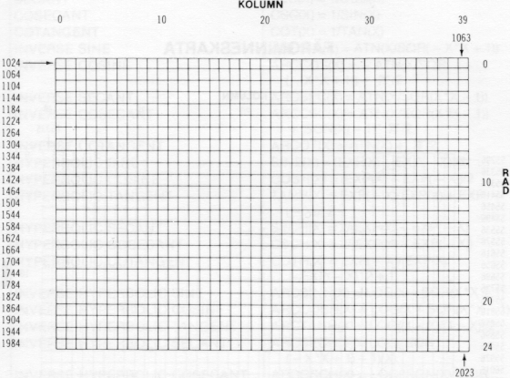
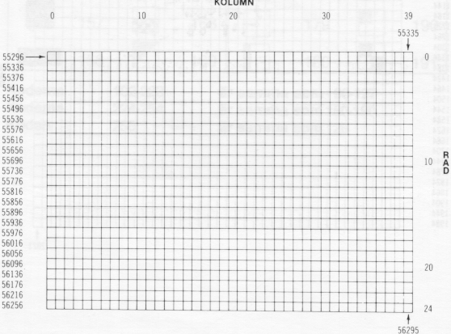

Vi har nu utforskat en liten del av den datakraft som Commodore 64 erbjuder. En av datorns mest fascinerande egenskaper är de fina möjligheterna att skapa grafik och färg.
Du har redan sett ett enkelt exempel på grafik i programmen "studsande boll" och "labyrint". Dessa program enbart snuddade vid de möjligheter du erbjuds. Ett antal nya begrepp kommer att introduceras i detta kapitel. Dessa kommer att visa grafik och färgprogrammering och hur du kan skapa dina egna spel och animationer.
Eftersom vi tidigare koncentrerat oss på datorns beräkningsmöjligheter, har alla bilder vi använt varit i en enda färg (Ijusblå text på mörkblå bakgrund och med ljusblå ram).
I detta kapitel ska vi lära oss hur vi sätter färg på våra program och hur vi kontrollerar alla de ovanliga grafiska symbolerna på tangentbordet.
Som du redan upptäckt, om du provade färginställningsförfarandet som beskrevs i kapitel 1, kan du förändra textfärgen genom att trycka ned CTRL-tangenten och en av färgtangenterna samtidigt. Detta fungerar bra i direktmode men vad händer om du vill använda detta i ett program?
När vi visade "studsande boll"-programmet såg du hur tangentbordets kommandon såsom markörflyttningar kunde användas i PRINT-instruktioner. På liknande sätt kan du också lägga textfärgändringar till ditt program.
Du har hela 16 olika färger att arbeta med. Genom att använda CTRL-tangenten och en siffertangent blir följande färger möjliga:
| 1 | 2 | 3 | 4 | 5 | 6 | 7 | 8 |
| Svart | Vit | Röd | Cyan | Purpur | Grön | Blå | Gul |
Om du trycker ned C= samtidigt med en siffertangent blir följande färger tillgängliga:
| 1 | 2 | 3 | 4 | 5 | 6 | 7 | 8 |
| Orange | Brun | Lj. röd | Grå 1 | Grå 2 | Lj. grön | Lj. blå | Grå 3 |
Skriv NEW och experimentera med följande: Håll ned CTRL-tangenten och tryck samtidigt på 1-tangenten. Tryck därefter på R-tangenten utan att hålla ned CTRL-tangenten.
Håll nu ned CTRL och tryck på 2-tangenten. Släpp upp CTRL och tryck på R-tangenten. Arbeta dig genom siffrorna omväxlande med bokstäverna och skriv ordet RAINBOW enligt följande:
Precis som markörkontroll visas som ett grafiskt tecken, visas också ett tecken för varje färgändring.
När du i det tidigare exemplet höll ned CTRL och tryckte på 3 skrevs ett "L" ut. CTRL och 7 skrev ut en vänsterpil "←". Varje färgkontroll kommer att visa sin egen unika grafiska kod när den används på detta sätt. Tabellen visar den grafiska representationen för samtliga färgkontroller som kan påverkas genom PRINT-instruktion.
Även om PRINT-instruktionen ser lite konstig ut på skärmen så visas endast texten när du kör programmet. Och bokstäverna växlar färg i enlighet med de färgkontroll tecken du placerade i PRINT-instruktionen.
Prova några egna exempel, blanda vilka färger du vill inom en enda PRINT-instruktion. Kom också ihåg att du kan använda den andra satsen färger genom att trycka ner C=-tangenten och en siffertangent.
Tag en snabb titt på bilaga F, och läs sedan vidare här.
Du har antagligen lagt märke till när du läste genom listan i bilaga F, att varje färg, (såväl som de flesta andra tangentbordskontroller såsom markörstyrningar mm.), har en unik kod. Dessa koder kan skrivas direkt för att erhålla samma resultat som att skriva CTRL och en lämplig tangent i en PRINT-sats.
Prova exempelvis följande:
10 PRINT CHR$(147):REM CLR/HOME 20 PRINT CHR$(30);"CHR$(30) ÄNDRAR MIG TILL ?"(Hämta)
Texten ska nu ha blivit grön. I ett flertal fall är det mycket enklare att använda CHR$-funktionen, speciellt om du vill experimentera med att ändra färger. På följande sida beskrivs ett annat sätt att skapa ett spektrum av färger. Då det är ett antal rader som är nästan lika (40-110) kan du använda redigeringstangenterna för att minska skrivarbetet. Se anmärkning efter programlistningen, vilken friskar upp ditt minne med avseende på redigeringsproceduren.
NEW
1 REM AUTOMATISKA FÄRGBALKAR
5 PRINTCHR$(147):REM CHR$(147)=CLR/HOME
10 PRINT CHR$(18);"{space*6}";:REM REVERS BALKAR
20 CL=INT(8*RND(1))+1
30 ON CL GOTO 40,50,60,70,80,90,100,110
40 PRINT CHR$(5);:GOTO 10
50 PRINT CHR$(28);:GOTO 10
60 PRINT CHR$(30);:GOTO 10
70 PRINT CHR$(31);:GOTO 10
80 PRINT CHR$(144);:GOTO 10
90 PRINT CHR$(156);:GOTO 10
100 PRINT CHR$(158);:GOTO 10
110 PRINT CHR$(159);:GOTO 10
(Hämta)
Skriv raderna 5 till 40 som vanligt. Skärmen bör se ut så här:
1 REM AUTOMATISKA FÄRGBALKAR 5 PRINTCHR$(147):REM CHR$(147)=CLR/HOME 10 PRINT CHR$(18);" ";:REM REVERS BALKAR 20 CL=INT(8*RND(1))+1 30 ON CL GOTO 40,50,60,70,80,90,100,110 40 PRINT CHR$(5);:GOTO 10
Använd markör-upp-tangenten för att styra markören till rad 40. Skriv sedan 5 över 4'an i 40. Använd därefter markör-höger tangenten att flytta över markören till 5 i CHR$-parentesen. Tryck på SHIFTINST/DEL för att skapa ett utrymme och skriv "28". Nu kan du trycka på RETURN med markören var som helst på linjen. Skärmen ska nu se ut så här:
1 REM AUTOMATISKA FÄRGBALKAR 5 PRINTCHR$(147):REM CHR$(147)=CLR/HOME 10 PRINT CHR$(18);" ";:REM REVERS BALKAR 20 CL=INT(8*RND(1))+1 30 ON CL GOTO 40,50,60,70,80,90,100,110 50 PRINT CHR$(28);:GOTO 10
Oroa dig inte! Rad 40 finns fortfarande kvar. LlSTa programmet och se efter. Använd samma procedur och modifiera nedre raden med ett nytt radnummer och CHR$-kod till dess alla återstående rader skrivits in. Du ser nu att redigeringstangenterna visar sig mycket användbara. Som en slutlig kontroll, LlSTa nu programmet och övertyga dig om att samtliga rader skrivits in rätt innan du kör programmet.
Nu följer en kort beskrivning av vad som sker.
Du har troligen förstått det mesta av färgbalksprogrammet nu, med undantag för det nya och ovana begreppet på rad 30. Men låt oss först se vad programmet verkligen utför. Rad 5 skriver CHR$-koden för CLR/HOME.
Rad 10 ändrar till omvänd skrift och skriver 5 mellanrum, vilket visar sig som en balk, eftersom mellanrummen är omvända (har textfärg). Första gången programmet genomlöps blir balken blå, den normala textfärgen.
På rad 20 används vår arbetshäst, RND-funktionen, för att slumpmässigt välja en färg mellan 1 och 8.
Rad 30 innehåller en variation på IF...THEN kommandot vilket kallas ON...GOTO.ON...GOTO möjliggör för programmet att välja från en tabell av radnummer vart det ska gå. Om variabeln (här CL) har ett värde av 1, väljs det första radnumret (40 i vårt exempel). Om värdet är 2 väljs det andra radnumret i tabellen och så vidare.
Raderna 40 till 110 omvandlar våra slumptal för färgval till motsvarande CHR$-kod och återför programmet till rad 10 för utskrift (PRINT) av balk i vald färg.
Därefter fortsätter programmet samma förlopp igen.
Se om du kan räkna ut hur det kan gå till att skapa 16 olika, slumpmässigt valda färger. Utöka ON...GOTO för att ta hand om dem och lägg till de återstående CHR$-koderna för att visa de återstående 8 färgerna.
Med kommandona PEEK är det möjligt att se efter i datorns minne vad som finns på en bestämd adress och med POKE att lägga in data där.
Precis som variabler kunde liknas vid ett antal lådor i datorn där du placerade din information, kan du också tänka dig vissa speciella lådor i datorn vilka representerar en bestämd minnesposition.
Commodore 64 undersöker dessa minnespositioner för att se vilka skärmens bakgrund och ramfärger ska vara, vilka tecken som ska skrivas på skärmen och var de ska skrivas samt en mängd andra uppgifter.
Genom att placera, POKEa, ett nytt värde i en speciell minnesposition, kan vi ändra färger, definiera och flytta föremål, och även skapa musik. Dessa minnespositioner kan representeras på detta sätt:
| 53280 | 53281 | 53282 | 53283 |
| X | Y | ||
| RAMFÄRG | BAKGRUNDSFÄRG |
Ovan visade vi 4 minnespositioner, av vilka 2 kontrollerar skärm- och bakgrundsfärgerna. Pröva skriva in följande:
POKE 53281,7 RETURN
Skärmens bakgrundsfärg har nu ändrats till gul eftersom vi placerade värdet "7" -för gul- i minnespositionen som kontrollerar skärmens bakgrundsfärg.
Prova att med hjälp av POKE-kommandot lägga in olika värden i minnespositionen som kontrollerar skärmens bakgrundsfärg. Du kan lägga in vilket som helst värde mellan 0 och 255, men enbart 0 till 15 fungerar.
De rätta värdena för respektive färg är:
| 0 | Svart | 8 | Orange |
| 1 | Vit | 9 | Brown |
| 2 | Röd | 10 | Ljusröd |
| 3 | Cyan | 11 | Grå 1 |
| 4 | Purple | 12 | Grå 2 |
| 5 | Grön | 13 | Ljusgrön |
| 6 | Blå | 14 | Ljusblå |
| 7 | Gul | 15 | Grå 3 |
Kan du komma på ett sätt att visa de olika bakgrunds- och ramfärgkombinationerna? Följande kan vara till hjälp:
NEW 10 FOR BA = 0 TO 15 20 FOR BO = 0 TO 15 30 POKE 53280, BA 40 POKE 53281, BO 50 FOR X = 1 TO 2000: NEXT X 60 NEXT BO: NEXT BA RUN(Hämta)
Två enkla slingor används för att med hjälp av POKE variera bakgrund och ramfärger. Fördröjningsslingor på rad 50 sänker endast hastigheten.
Ta nu och skriv:
PEEK (53280) AND 15
Du ska få värdet 15. Detta är det senaste varde ramfärgen fått och det är rätt eftersom både bakgrund och ramfärgen är grå (värde 15) efter det att programmet har körts.
Genom att skriva AND 15 elimineras alla andra värden förutom 1-15. Detta beror på det sätt som färgkoderna lagras i datorn. Vanligtvis kan du förvänta dig att finna samma värde som senast "POKEades" in i minnespositionen. PEEK låter oss undersöka en bestämd minnesposition och se vilket värde som för tillfället finns lagrat där. Kan du komma på en extra rad till programmet som visar innehållet i bakgrund och ramfärgsminnena samtidigt som programmet körs?
Prova följande:
45 PRINT CHR$(147);"RAM =" ;PEEK(53280) AND 15,
"BAKGRUND=";PEEK(53281) AND 15
Vid utskrift av information vi hittills arbetat med har datorn behandlat informationen i sekventiell form. Tecken har skrivits efter varandra med början från föregående markörposition. Detta med undantag för då du begärt ny rad eller genom att skriva "," vid PRINT-formattering.
För att skriva data på en speciell plats på skärmen kan du starta från en känd punkt och styra markören med hjälp av markörkontrolltecken för att formattera skärmen. Detta kräver emellertid en mängd programsteg och är tidskrävande.
På samma sätt som det finns en speciell adress i Commodore 64's minne för färgkontroll, finns det också minnespositioner som du kan använda för att direkt kontrollera varje punkt på skärmen.
Då datorns skärm har plats för 1000 tecken (40 kolumner gånger 25 rader) finns det 1000 minnespositioner reserverade för att ta hand om det som skrivs på skärmen.
Skärmen är arrangerad som ett rutmönster där varje fyrkant representerar en minnesposition.
Då varje minnesposition kan lagra ett tal från 0 till 255, finns det 256 möjliga värden för varje minnesposition. Dessa värden representerar de olika tecken Commodore 64 kan visa. (Se bilaga E). Genom att använda POKE-kommandot kan värdet för ett tecken läggas in i en minnesposition så att tecknet visas på motsvarande plats på skärmen.

Skärmminnet hos Commodore 64 börjar normalt med minnesposition (adress) 1024 och slutar med adress 2023. Position 1024 är skärmens övre vänstra hörn. Adress 1025 är positionen närmast till höger och så fortsätter det raden ut. Adress 1063 är positionen längst till höger på första raden. Positionen efter sista positionen på en rad är första positionen på raden under.Föreställ dig att du vill kontrollera en studsande boll på skärmen. Bollen är i mitten av skärmen, kolumn 20, rad 12. Formeln för beräkning av minnespositionen är:
PUNKT = 1024 + X + 40 * Y
^ ^
kolumn rad
Där X är kolumnen och Y är raden. Därför blir minnespositionen för bollen:
1024 + 20 + 480 eller tillsammans 1524
^ ^
kolumn rad(40*12)
Rensa skärmen med SHIFT och CLR/HOME och skriv:
POKE 55796, 1
POKE 1524, 81
^ ^
Position Teckenkod
En boll visar sig i mitten av skärmen. Du har placerat ett tecken direkt i skärmminnet utan att använda PRINT-kommandot. Bollen som visade sig var vit. Det finns emellertid ett sätt att ändra färg på ett objekt på skärmen genom att ändra i ett annat minnesområde. Skriv:
POKE 55796, 2
^ ^
Position Färg
Bollens färg ändrades till röd. För varje punkt på Commodore 64's skärm finns det två minnespositioner, en för teckenkoden och en för färgkoden. Färgminneskartan börjar vid minnesposition 55296 (övre vänstra hörnet), och fortsätter vidare 1000 positioner till 56295.

Samma färgkoder från 0 till 15, som vi använde för att ändra ram och bakgrundsfärger, kan användas här för att direkt ändra teckenfärger. Formeln vi använde för att beräkna skärmminnespositioner kan modifieras för att ge färgminnespositioner att användas tillsammans med POKE-kommandot. Den nya formeln lyder:TECKENFÄRG = 55296 + X + 40*Y
Här är ett omgjort studsande boll-program som skriver direkt på skärmen med hjälp av POKE-kommandot, till skillnad mot tidigare program som använde markörstyrning genom PRINT-kommandon. Som du kommer att se när du kört programmet, är det mycket mer rörligt, och ger mer levande bilder.
10 PRINT"{clear}"
20 POKE 53280,7 : POKE 53281,13
30 X = 1 : Y = 1
40 DX = 1 : DY = 1
50 POKE 1024 + X + 40*Y,81
60 FOR T = 1 TO 10 : NEXT
70 POKE 1024 + X + 40*Y,32
80 X = X + DX
90 IF X = 0 OR X = 39 THEN DX = -DX
100 Y = Y + DY
110 IF Y = 0 OR Y = 24 THEN DY = -DY
120 GOTO 50
(Hämta)
Rad 10 rensar skärmen och rad 20 ändrar bakgrunden till ljusgrön med gul ram.
X och Y variablerna på rad 30 håller rätt på bollens aktuella rad och kolumnposition. Variablerna DX och DY på rad 40 är bollens horisontella och vertikala rörelseriktningar. När + 1 adderas till X värdet, flyttar bollen sig till höger. Om - 1 adderas rör sig bollen åt vänster. Om + 1 adderas till Y flyttas bollen nedåt en rad, - 1 flyttar bollen uppåt en rad.
Rad 50 skriver bollen på skärmen i aktuell position. Rad 60 är den gamla bekanta fördröjningsslingan, vilken åstadkommer att bollen stannar på skärmen lagom länge för att synas.
Rad 70 raderar bollen genom att ersätta den med ett mellanslag (blanktecken, kod 32) på den plats där bollen var på skärmen.
Rad 80 adderar riktningsfaktor till X. Rad 90 testar för att se om bollen nått någon av sidoväggarna och byter riktning om det är en studs. Raderna 100 och 110 gör samma för övre och undre väggarna.
Rad 120 styr tillbaka programmet till skärmen för att rita ut bollen igen.
Genom att ändra koden på rad 50 från 81 till en annan teckenkod kan du ändra bollen till ett annat tecken. Om du ändrat DX eller DY till 0 studsar bollen rakt istället för diagonalt.
Vi kan också göra programmet smartare. Hittills har datorn endast kontrollerat att X och Y värdena inte gått utanför väggarna. Lägg till följande rader till programmet:
21 FOR L = 1 TO 10 25 POKE 1024 + INT(RND(1)*1000), 166 <------------------ CHR$-kod 27 NEXT L 115 IF PEEK(1024 + X + 40 * Y) = 166 THEN DX = -DX : GOTO 80
Raderna 21 till 27 lägger ut 10 fyrkanter i slumpmässigt valda positioner på skärmen. Rad 115 undersöker (PEEKar av) för att se om bollen är på väg att studsa in i en fyrkant, och ändrar i så fall riktning.